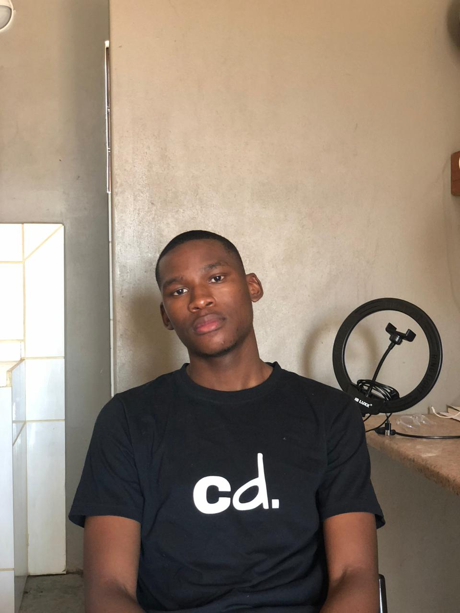

Vukosi Mohlabini
Meet Vukosi - A tech junkie and programmer extrodinare (wannabe) with a interesting passion for astronomy. When he's not coding up a storm, you'll catch him stargazing and pondering the wonders of the universe. But Vuks' not all about tech and stars; he's also a sports fanatic.
Whether he's rooting for the Texas Longhorns on the gridiron (College Football), cheering on Manchester United in soccer, or getting his adrenaline fix with Formula 1 racing, he's always in the game. And amidst all his interests, Vukosi's got one big dream: to visit the CERN Hadron Collider and unlock the mysteries of the cosmos firsthand. With his blend of geekiness and sportsmanship, Vukosi's one fascinating guy.
